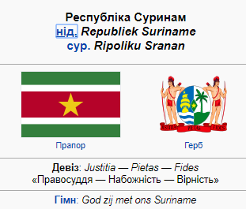

Суринам Ripoliku Sranan

Суринам
Oфіційна назва Республіка Суринам нід. Republiek Suriname сур. Ripoliku Sranan— держава на північно-східному узбережжі Південної Америки, частина регіону Гвіана. На заході межує з Гаяною, на півдні — з Бразилією, на сході — з Французькою Гвіаною, на півночі омивається водами Атлантичного океану.
Корінні мешканці Суринаму мешкали племенами в дрібних поселеннях. У той час основну частину харчів становили коренеплоди, зокрема маніока. Прибережні племена говорили мовами аравакської сім'ї, мешканці внутрішніх областей — карибськими.
У 1498 році Христофор Колумб досяг берегів сучасного Суринаму під час третьої експедиції до Нового Світу. Наніс на мапу країну Дієго де Лепе 1500 року. Після довготривалої перерви, у кінці 16 століття європейці зацікавилися Гвіаною через чутки про казкову країну Ельдорадо. Згодом, незважаючи на марні пошуки золота, було відкрито торговельні факторії вздовж Атлантичного узбережжя.
День Незалежності — 25 листопада 1975.
Прапор Суринаму — зелено-білий-червоний із зіркою по центрі.
Гімн: God zij met ons Suriname.